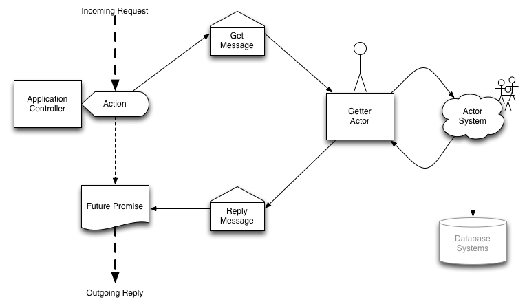

Playing with Actors!
How to write web applications seem to be a source of endless debate on the internet, much like anything that is largely a matter of opinion. What exactly constitutes a good platform? It can be hard to say. Some of the largest successes are written on what are generally regarded as poor platforms. Facebook is written in PHP (or used to be), Twitter started as a Ruby on Rails application.
In truth, I think whatever personally gets you going is the way to work. If you love Abstract Singleton Proxy Factories then perhaps Java is the way to go! On the other hand, if you insist on being a mathematical heavyweight, Haskell might be your pleasure.
Personally, I like the whole asynchronous messaging workflow. I don't know why; it makes sense in my head. I am pleased that Play framework comes with Akka, a message-driven asynchronous framework. I will present a simple Play example and try to explain why I did what I did.
Just for kicks, I threw in dependency injection because it fits well with creating an actor-messaging framework.
Overview
Play routes incoming HTTP requests to Controllers, these are objects you create. A controller can do it all if you wish, it can process the entire request all the way down to accessing the database, but that was not my goal. Below is an example of a totally synchronous design, where the controller handles everything:

Time to throw some actors into the mix.
Instead of programming the business logic directly in the controller, a message object encapsulating the request will be fired off to a background Actor asynchronously. The controller is then immediately free to handle more incoming requests. The response is no longer sent from the controller, but from a one-time object called a Future or Promise that awaits the actors reply.

Actors and Controllers are permanent parts of the system. Futures and messages exist only during a request.

Actors can be as simple or as complicated as necessary. For example different actors could be in charge of different business objects in the system. Alternatively one actor could handle everything, dividing messages up by convenient case-classes and pattern matching.1
Talking to Actors
The controller will look like this:
class Application( val actor: ActorRef ) extends Controller { def index = Action { implicit request => // Talk to actor } }As the controller receives a request, it will be forwarded to the relevant actor by way of an asynchronous message. Since eventually the browser of our website will expect a reply, it's not as simple as:
actor ! messageWe need to process the request then send a reply while maintaining the context and scope of the open client connection. Play provides a sort of boilerplate solution for us:
class Application( val actor: ActorRef ) extends Controller { implicit val timeout : Timeout = Timeout(Duration(5,"seconds")) def index = Action { implicit request => Async { new AkkaPromise( actor ? "Incoming Message!" ) map { // Handle Reply } } } }The code
AsyncandAkkaPromisehandle theFuturereturned by`actor ? message`that will eventually contain our reply back to the users browser.2Note: This does not handle timeouts gracefully. This is left as an exercise to the reader... and myself.
Better Communication
Actors represent the business logic of the system. As such, they don't really need to know any HTTP details. The controller's job is thus to parse the HTTP request into a more generic request that the actors would prefer.
The power of case classes will come into play. Case classes are the meat and potatoes of actor messaging. Need a specific kind of message? Make a case class. Let's make one now, something simple.
case class Get(path: String)By using case classes the compiler will help check our message logic. Now the controller can send better messages
class Application( val actor: ActorRef ) extends Controller { implicit val timeout : Timeout = Timeout(Duration(5,"seconds")) def index = Action { implicit request => Async { new AkkaPromise( actor ? Get(request.path) ) map { // Handle Reply } } } }The actor receiving the message can easily parse this using pattern matching:
class Getter extends Actor { def receive = { case Get(path) => // Get and process your data using `path` // Create and send a response sender ! response } }The final line
sender ! responsewill trigger the controllers asynchronous reply (line 10).Dependency Injection
I'm going to pollute the focus of this article by also addressing dependency injection. Injecting actors into controllers feels like the right thing to do; I call it gut programming! So let's do it.
I am using what I understand to be the cake pattern3. This is by far the most delicious sounding of all dependency injection frameworks, although Google Guice is a close second.
IMHO your objects do not need to know about the injection framework. If your object has a dependency, put it in the constructor.4
class Application( val actor: ActorRef ) extends Controller { def index = Action { // Use `actor` here } }For each class that requires injection, we add a trait that acts as the injector:
trait ApplicationInjector { // To be injected by a mixing bowl val applicationActor: ActorRef // must be `lazy val` or `def` otherwise it will not inject properly lazy val application: Application = new Application(applicationActor) }In the above case, we directly create an injected object. You can also create a subclass within the injector where dependencies are pre-filled.
trait ApplicationInjector { // To be injected by a mixing bowl val applicationActor: ActorRef class InjectedApplication extends Application( applicationActor ) }To handle the injections, use a mixing bowl:
object MixingBowl extends ApplicationInjector { val applicationActor = system.actorOf( Props[Getter], name="application" ) }There is now a fully injected application controller at
MixingBowl.application.5Full Example
The full example, with lots of comments is hosted on github. The names of classes and objects have been changed slightly to protect the innocent.
Footnotes
- See my previous post Learning Scala: Case Classes and Pattern Matching [↩]
- Read more about
Asyncin the Scala Async API [↩]- See Real-World Scala: Dependency Injection by Jonas Bonér / [↩]
- The
valis necessary if you wish to later reference the parameter byobject.actor[↩]- Although I haven't really covered it here, this pattern is necessary to survive more complicated injection setups. [↩]
Tags
Sponsors

Categories
- Editorial (2)
- Gist (3)
- Journal (12)
- Note (1)
- Technology (3)
People Worth Knowing
- ITS Media A team of highly caffeinated website and mobile designers in Kelowna, B.C.
- Miss Wishful
Archives
- April 2012 (11)
- March 2012 (4)
- September 2011 (1)
- August 2011 (5)

This work by Jacob Groundwater is licensed under a Creative Commons Attribution 3.0 Unported License.